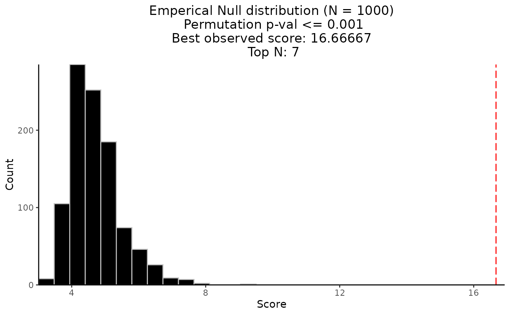

The permutation result returned from CaDrA() using pre-simulated dataset
(FS = sim_FS), pre-simulated input scores (input_score = sim_Scores),
top_N = 7, method = "ks_pval", alternative = "less",
search_method = "both", max_size = 10,
obs_best_score = NULL and n_perm = 1000
as inputs to the function.
data(perm_res)A list of objects returned from CaDrA() function. The resulting
object contains a list of key parameters that was used to run the
permutation-based testing, a vector of permuted best scores for a given n_perm,
an observed best score, and a permuted p-value.
To visualize the Empirical Null Distribution of the permuted best scores over
n_perm iterations, just pass the resulting list to permutation_plot().
See permutation_plot() for more details.
Kartha VK, Kern JG, Sebastiani P, Zhang L, Varelas X, Monti S (2017) CaDrA: A computational framework for performing candidate driver analyses using binary genomic features. (Frontiers in Genetics)
# Load the pre-computed permutation results for sim_FS
data(perm_res)
# Plot the Empirical Null Distribution of the permuted best scores
# against its observed best score
permutation_plot(perm_res = perm_res)
#> `stat_bin()` using `bins = 30`. Pick better value with `binwidth`.
